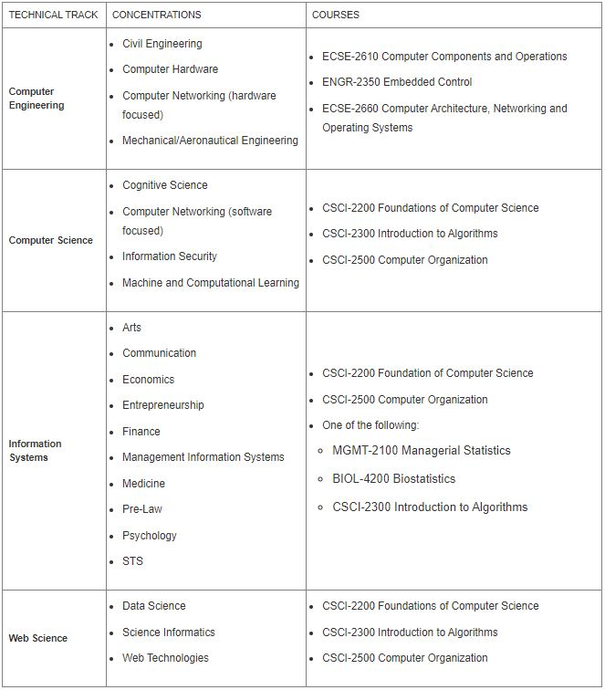

In a world in which information technology affects virtually everything we do, there is a demand for an academic program that offers students the deepest understanding of the Web. As an ITWS student, you will investigate issues related to security, trust, privacy, content value, and the development of the Web in the future.
You will take a core set of courses on Web and IT development and management, along with courses in your concentration, selected from more than 20 options, including arts, engineering, management, communications, artificial intelligence, Web systems, and medicine.
Completion of the B.S. in Information Technology and Web Science requires a total of 128 - 130 credit hours:
The ITWS core requirements establish a solid foundation for applying ITWS to any discipline.
The required concentration provides an opportunity for in-depth study of an ITWS application area. Concentration options include arts, communication and networks, law, management information systems, medicine, psychology, and numerous others. In consultation with a faculty adviser, students may also design their own concentration through the selection of courses that match their individual interests.
Along with the 8 required courses (32 credits) for your concentration, you must take the corresponding required technical track courses:
The Rensselaer requirements ensure the degree’s breadth and its consistency with long-established Rensselaer traditions.
The Arch is a unique approach to education that provides flexibility in the semester schedule, allowing students to pursue professional and personal development opportunities that prepare them to meet the multifaceted challenges of the 21st century. The Arch is a requirement of the Rensselaer curriculum.
Summer Here: During The Arch, students remain on campus for the summer after their sophomore year, taking junior-level classes, and receive focused attention from professors at this pivotal point in their academic progression.
The World Away: Then, students leave the Troy campus for a semester during the traditional junior year—either fall or spring—to pursue their passions in the form of co-ops, internships, civic engagement, research, or international experiences. Students who pursue these opportunities during their academic career are better prepared for future professional careers and graduate school.
For more information regarding the Arch, please visit https://info.rpi.edu/the-arch